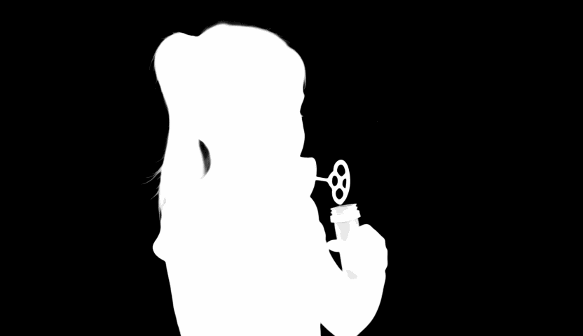

üåü Showcase
| Prompt | Preview Video | Alpha Video |
|---|---|---|
| "Medium shot. A little girl holds a bubble wand and blows out colorful bubbles that float and pop in the air. The background of this video is transparent. Realistic style." |  |
 |
| "Close-up. A coffee bean falls into a cup of hot water, and the brown liquid slowly spreads out. The background of this video is transparent. Realistic style." |  |
 |
| "Close-up. A bird takes off from a branch, its wings fluttering and lifting tiny feathers. The background of this video is transparent. Realistic style." |  |
|
| "Close-up. A candle burns, its flame swaying with the air, and wax slowly drips. The background of this video is transparent. Realistic style." |  |
 |
| "This video has a transparent background. A young boy, wearing tracksuits, drinks water. He has a relaxed expression, holding a clear plastic cup and looking forward. Realistic style. Medium shot. Slight upward angle." |  |
|
| "This video has a transparent background. An attractive Asian woman, dressed in a stylish urban business suit, smiles as a gentle breeze rustles her long, flowing black hair, sending strands flying. Her eyes are gentle and vibrant, and a contented smile plays on her lips. Realistic style. Medium shot. Slight upward angle." |  |
|
| "This video has a transparent background. A man in sportswear drinks water, his expression relaxed, his eyes looking forward. Realistic style. Medium shot." |  |
|
| "The video has a transparent background. A woman in a gorgeous gown holds a dimly lit candle, its flame framing her dreamlike silhouette. Her expression is serene, as if she's lost in thought. The video is shot in a romantic, retro style, with a close-up of her body." |  |
|
| "This video has a transparent background. Realistic style. A woman in casual home clothes elegantly holds a clear glass filled with orange juice. She has warm eyes and soft brown curls. Medium shot." |  |
|
| "This video has a transparent background. The edges of the crystal flower's petals shimmer with a cool blue-white light, while the center is faintly luminous. Realistic style. Medium shot." |  |
|
| "This video has a transparent background. A silvery-white halo flickers in a circular pattern, spreading evenly. Realistic style. Medium shot." |  |
|
| "This video has a transparent background. A street lamp shade glows orange-red, and the wick flickers. Realistic style. Medium shot." |  |
|
| "This video has a transparent background. A dark blue furry hat falls, swaying in the air. The brim is covered in dense fur, feeling warm and soft. Realistic style. Medium shot." |  |
|
| "This video has a transparent background. A black puppy with fine, dense fur sways in the wind, its tail gently wagging. Realistic style. Medium shot." |  |